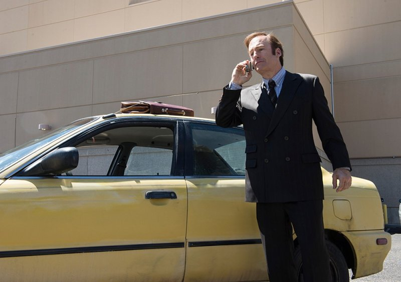
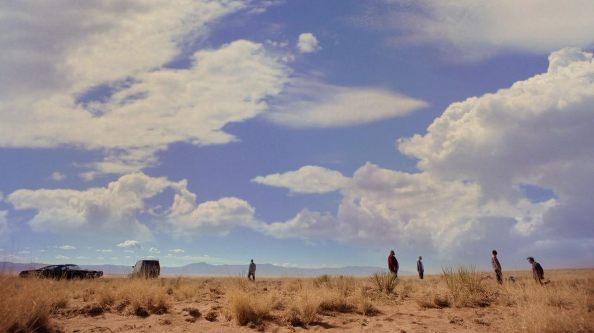
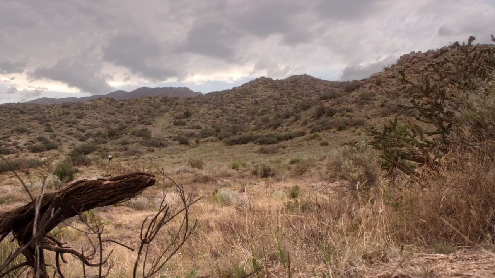
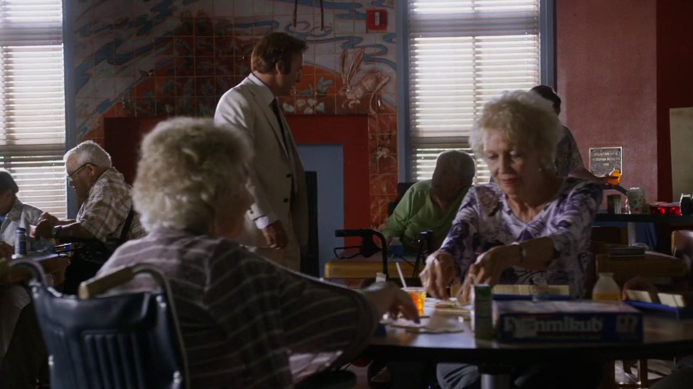
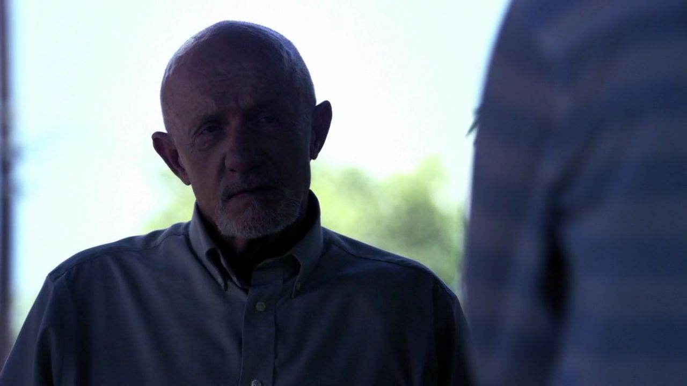
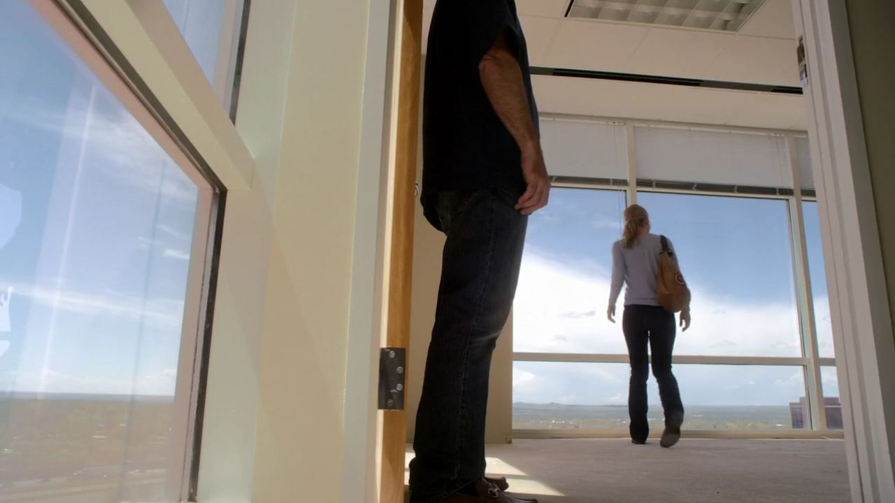
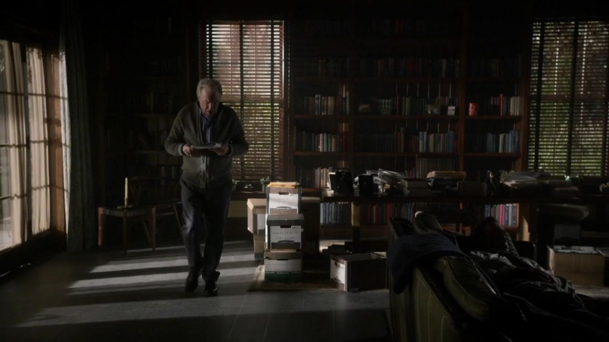
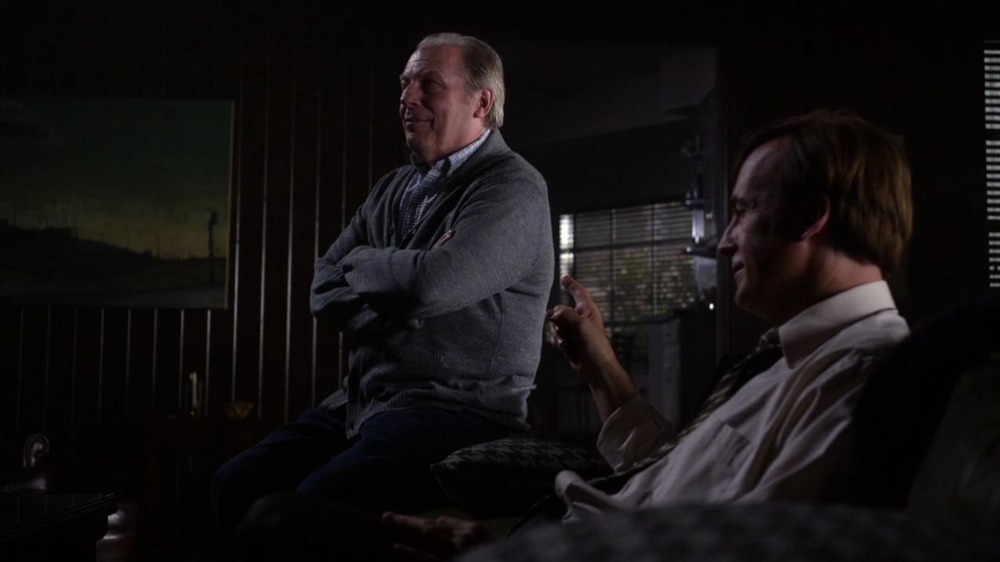
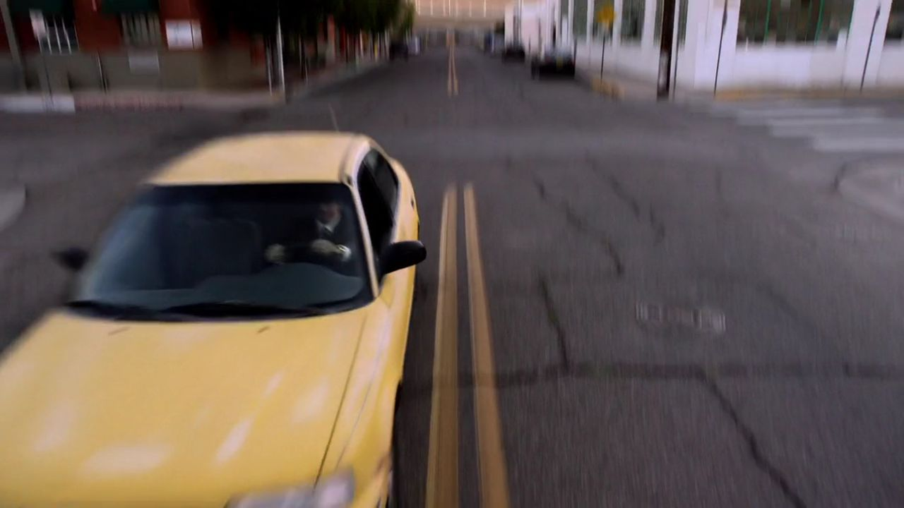

S01E01 / UNO
一个好律师，为什么开始走捷径？
他有执照，会辩护，也照顾着哥哥。可在法庭之外，吉米·麦吉尔的生活几乎处处碰壁：报酬不够，客户迟疑，大律所不肯按他的要求办事，连停车出口都不能靠几句漂亮话通过。首集把这些小挫折慢慢叠起来，直到他决定：既然别人看不见我的价值，就安排一场戏，让他们不得不看见。

风骚律师 第一季 · 完整十集
从一间美甲店后屋，到一份真正的大案。
跟着吉米看见机会、信任与捷径，也看见迈克沉默背后的重量。
每集从真实画面进入，梳理行动如何引发下一步，再分开讨论人物想要什么、手中有什么、彼此又误解了什么。剧情事实和个人解读分别标注，台词附英文原句与中文自译。
全部十集配图与导读默认展示。单集仅剧透截至当集，包含当集结尾；不涉及第二季，也不借《绝命毒师》的具体结局解释人物。
他有执照，会辩护，也照顾着哥哥。可在法庭之外，吉米·麦吉尔的生活几乎处处碰壁：报酬不够，客户迟疑，大律所不肯按他的要求办事，连停车出口都不能靠几句漂亮话通过。首集把这些小挫折慢慢叠起来，直到他决定：既然别人看不见我的价值，就安排一场戏，让他们不得不看见。

02
03
05
06
07
08
09
10先跟着剧情走，再回到人物关系；遇到意见相反的两个人，试着分别问一句：他在保护什么？
理解一个决定怎样发生，也保留评价这个决定的距离。